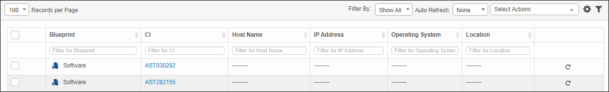
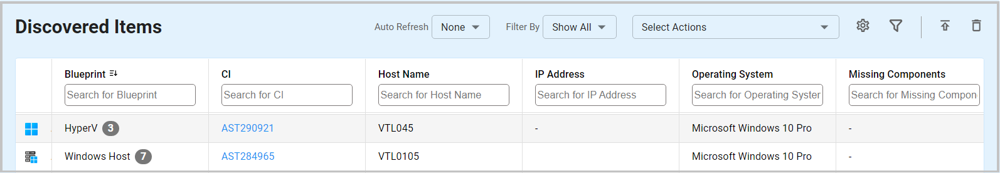

Discovered Items
Use this function to view the details for a successful scan, configured items for each record, and the number of new changes discovered for the CI present in the CMDB.
| The number of change can increase when the asset inside the discovered items is scanned multiple times. With every scan, new changes for that CI are found inside CMDB. Once the asset is moved into the CMDB, all the changes are applied to CI, and the asset gets deleted as a Discovered Item. |
In the navigation pane, select Discovery Scan > Discovered Items. The Discovered Items window displays.


Filter By
To filter the list, from the Filter By drop-down list, select one of the following:
| For a record containing a hyperlink in the CI column, this asset exists in the CMDB. For a record with no hyperlink in the CI column, the asset has not been imported and is considered an "unauthorized asset." |
Correlation of Records

From the Select Actions drop-down list, choose an action: Move to CMDB, Move to ServiceNow, or Re-Scan.
From the Select Actions drop-down list, choose an action: Move to CMDB, Move to ServiceNow, or Re-Scan.
On the Details tab, the details cannot be edited. However, the following can be done:
Other information may be shown, and varies by asset. For example:
| Deleting is a permanent action and cannot be undone. Deleting may affect other functionality and information in the application such as data in configured reports, fields in windows, selectable options, etc. Therefore, be sure to understand the potential effects before making a deletion. |
| 1. | Click the line that contains the item to delete. |
| 2. | From the Select Actions drop-down list, choose Delete. If a confirmation message is displayed, type Delete and click Deleteto confirm. |
Related Topics
Other Functions and Page Elements